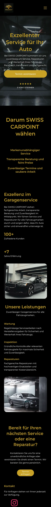
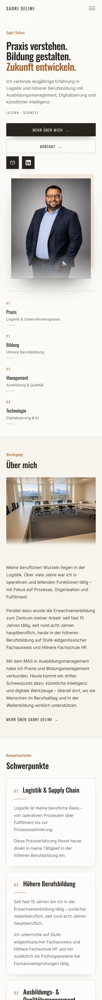
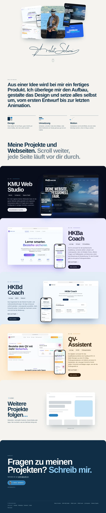
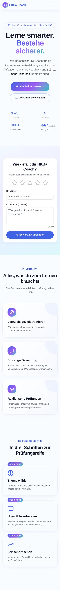

Referenzen
Dein Auftritt. Auf
jedem Gerät.
Sieben echte KWS-Referenzen, vier Websites und drei Lern-Apps, jede auf MacBook und iPhone.
Fahre mit der Maus auf eine Website und scrolle durch sie. Mit der Tastatur: Website mit der Tabulatortaste wählen und mit den Pfeiltasten scrollen.
Beim Scrollen läuft jede Website von oben nach unten durch.
Websites 04







Lern-Apps 03

